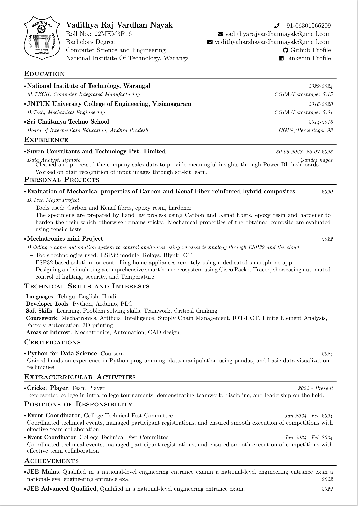

Professional NITW Resumes in Perfect LaTeX
Create clean, professional NIT Warangal resumes using the official LaTeX template without writing any code. Simply enter your details, follow the steps, and generate your Overleaf-ready code.
How to Generate Your Resume
01
Launch the builder
Click "Create My Resume" to begin.
02
Enter your details
Fill in education, projects, and history.
03
Export LaTeX
Copy the generated code or export to Overleaf.
04
Final PDF
Compile in Overleaf for a perfect NITW resume.
Sample NITW Resume Output
View Template